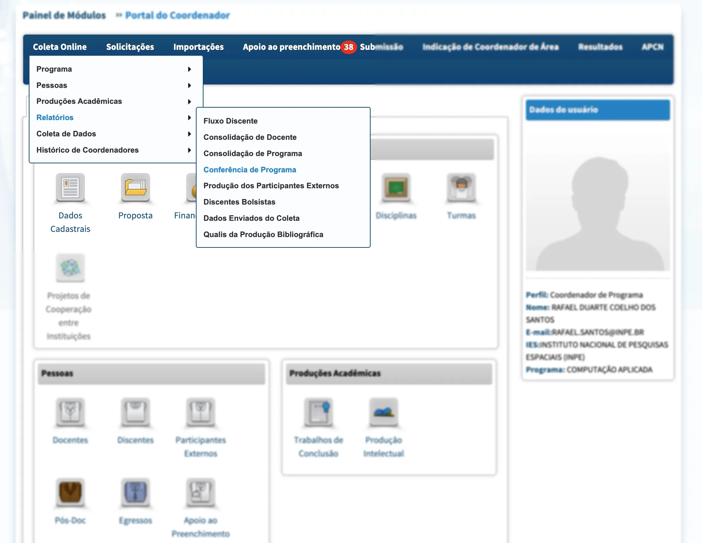

Obtendo dados submetidos à Plataforma Sucupira
Esta seção trata de dados que só podem ser obtidos da Plataforma Sucupira com credenciais de coordenador de programa de pós-graduação!
Como obter os dados
Para as análises nesta seção usaremos os dados submetidos à Plataforma Sucupira (não os dados abertos da CAPES, que serão usados em outra seção), mas somente os dados de um determinado programa de pós-graduação. Estes dados podem ser obtidos no próprio módulo de coleta de dados, acessível somente por coordenadores deste programa e pessoas autorizadas.
Para obter estes dados é necessário entrar na Plataforma Sucupira e clique em ACESSO RESTRITO, depois no ícone do Portal do Coordenador de PPG.
Os dados que já foram enviados pela plataforma e homologados pelas pró-reitorias podem ser baixados na forma de planilhas. Use o menu Coleta Online/Relatórios/Dados Enviados do Coleta conforme mostrado na imagem a seguir.
{kind=link}
O portal mostrará opções para selecionar o ano de envio dos dados, opções para escolher quais categorias de dados devem ser baixados e o formato como mostrado a seguir.
{kind=link}
Escolha o ano, selecione todos os dados e escolha XLS como formato de exportação. Clique em Gerar Relatório e aguarde alguns segundos par ver o link para obtenção do arquivo. Repita esta operação para cada ano que quiser analisar, renomeando o arquivo baixado.
Arquivos baixados neste exemplo
Para os exemplos usados nestes documentos a lista de arquivos, já renomeada, é:
relatorio_dados_enviados_coleta_2014.xlsx
relatorio_dados_enviados_coleta_2015.xlsx
relatorio_dados_enviados_coleta_2016.xlsx
relatorio_dados_enviados_coleta_2017.xlsx
relatorio_dados_enviados_coleta_2018.xlsx
relatorio_dados_enviados_coleta_2019.xlsx
relatorio_dados_enviados_coleta_2020.xlsx
relatorio_dados_enviados_coleta_2021.xlsx
relatorio_dados_enviados_coleta_2022.xlsx
relatorio_dados_enviados_coleta_2023.xlsxDados do preenchimento do ano corrente
As planilhas baixadas através do procedimento mostrado na seção anterior contém dados que já foram enviados para a CAPES, mas não os dados sendo preenchidos no ano corrente. Se for necessário baixar alguns dos dados do preenchimento podemos fazê-lo para algumas categorias.
É importante observar que a planilha com dados do ano corrente tem formato e conteúdo diferente das planilhas dos anos já homologados.
Como veremos alguns exemplos de análise de publicações vamos baixar a planilha de publicações do ano corrente. Acesse, no Portal do Coordenador de PPG da Plataforma Sucupira, o menu Coleta Online/Relatórios/Conferência do Programa, como ilustrado na figura abaixo:
 Para baixar a planilha com dados de publicações do ano corrente (claro, somente com as que o coordenador tiver importado ou cadastrado na Plataforma Sucupira) selecione a categoria Produção Intelectual, use como Ano de Referência o ano corrente, selecione a opção de exportar relatório para XLS e como tipo de relatório selecione Lista replicada de produções intelectuais com informação de autores – esta será a opção mais adequada para os relatórios deste estudo. As opções sugeridas são mostradas na figura abaixo.
{kind=link}
{kind=link}
Clique em Gerar Relatório e aguarde o link para baixar a planilha. Renomeie-a para ListaReplicadaComAutores.xls.
É possível obter esta planilha mesmo após a submissão e homologação do Coleta do ano de referência.